Page 5 out of 12 total pages
In the kernel package, entities have no semantics. They are syntactic placeholders. In many of the uses of Ptolemy II, entities are executable. The actor package provides basic support for executable entities. It makes a minimal commitment to the semantics of these entities by avoiding specifying the order in which actors execute (or even whether the execute sequentially or concurrently), and by avoiding specifying the communication mechanism between actors. These properties are defined in the domains.
In most uses, these executable entities conceptually (if not actually) execute concurrently. The goal of the actor package is to provide a clean infrastructure for such concurrent execution that is neutral about the model of computation. It is intended to support dataflow, discrete-event, synchronous-reactive, communicating sequential processes, and process networks models of computation, at least. The detailed model of computation is then implemented in a set of derived classes called a domain. Each domain is a separate package.
Ptolemy II is an object-oriented application framework. Agha's actors [1] extend the concept of objects to concurrent computation. His actors encapsulate a thread of control and have interfaces for interacting with other actors. They provide a framework for "open distributed object-oriented systems." An actor can create other actors, send messages, and modify its own local state.
Inspired by this model, we group a certain set of classes that support computation within entities in the actor package. Our use of the term "actors," however, is somewhat broader than Agha's, in that ours does not require an entity to be associated with a single thread of control, nor does it require the execution of threads associated with entities to be fair. Some subclasses, in other packages, impose such requirements, as we will see, but not all.
Agha's actors can only send messages to acquaintances -- actors whose addresses it was given at creation time, or whose addresses it has received in a message, or actors it has created. Our equivalent constraint is that an actor can only send a message to an actor if it has (or can obtain) a reference to an input port of that actor. The usual mechanism for obtaining a reference to an input port uses the topology, probing for a port that it is connected to. Our relations, therefore, provide explicit management of acquaintance associations. Derived classes may provide additional implicit mechanisms. We define actor more loosely to refer to an entity that processes data that it receives through its ports, or that creates and sends data to other entities through its ports.
The actor package provides templates for two key support functions. These templates support message passing and the execution sequence (flow of control). They are templates in that no mechanism is actually provided for message passing or flow of control, but rather base classes are defined so that domains only need to override a few methods, and so that domains can interoperate.
The actor package provides templates for executable entities called actors that communicate with one another via message passing. Messages are encapsulated in tokens (see the Data chapter). Messages are sent via ports. IOPort is the key class supporting message transport, and is shown in figure 3.2. An IOPort can only be connected to other IOPort instances, and only via IORelations. The IORelation class is also shown in figure 3.2. TypedIOPort and TypedIORelation are subclasses that manage type resolution. This is described in detail in the Types chapter.
An instance of IOPort can be an input, an output, or both. An input port (one that is capable of receiving messages) contains one or more instances of objects that implement the Receiver interface. Each of these receivers is capable of receiving messages from a distinct channel.
The type of receiver used depends on the communication protocol, which depends on the model of computation. The actor package includes two receivers, Mailbox and QueueReceiver. These are generic enough to be useful in several domains. The QueueReceiver class contains a FIFOQueue, the capacity of which can be controlled. It also provides a mechanism for tracking the history of tokens that are received by the receiver. The Mailbox class implements a FIFO (first in, first out) queue with capacity equal to one.
Data transport is depicted in figure
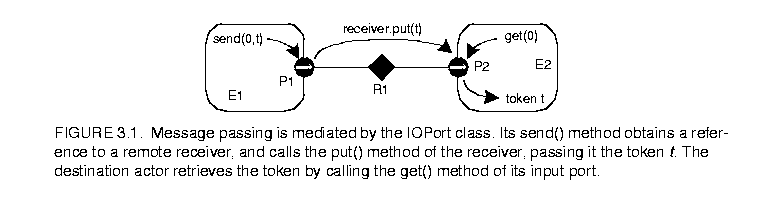
3.1.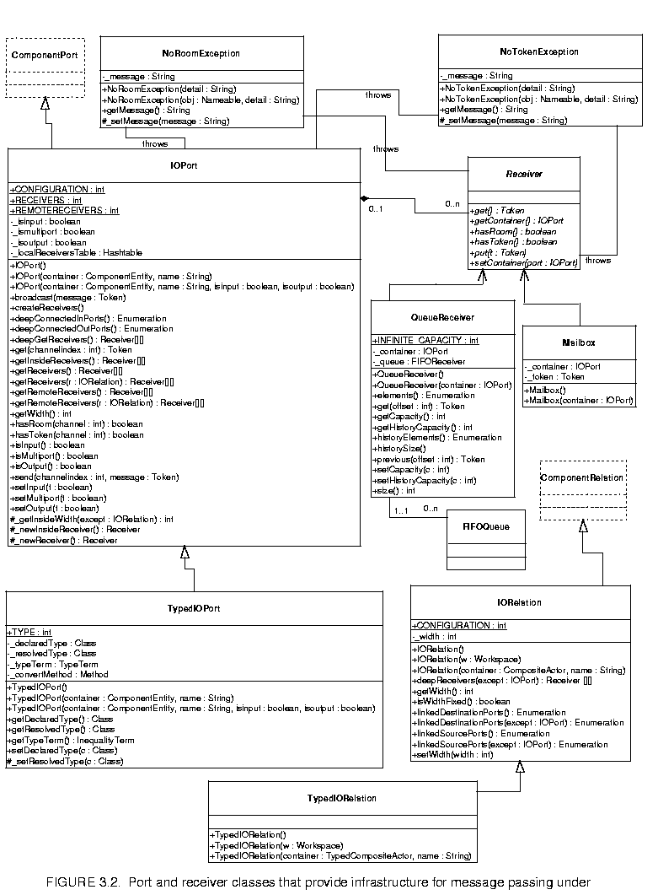
The originating actor E1 has an output port P1, indicated in the figure with an arrow in the direction of token flow. The destination actor E2 has an input port P2, indicated in the figure with another arrow. E1 calls the send() method of P1 to send a token t to a remote actor. The port obtains a reference to a remote receiver (via the IORelation) and calls the put() method of the receiver, passing it the token. The destination actor retrieves the token by calling the get() method of its input port, which in turn calls the get() method of the designated receiver.Domains typically provide specialized receivers. These receivers override get() and put() to implement the communication protocol pertinent to that domain. A domain that uses asynchronous message passing, for example, can usually use the QueueReceiver shown in figure 3.2. A domain that uses synchronous message passing (rendezvous) has to provide a new receiver class.
In figure 3.1 there is only a single channel, indexed 0. The "0" argument of the send() and get() methods refer to this channel. A port can support more than one channel, however, as shown in figure
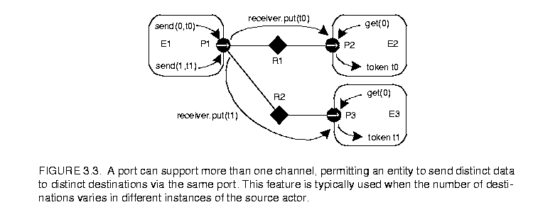
3.3. This can be represented by linking more than one relation to the port, or by linking a relation that has a width greater than one. A port that supports this is called a multiport. The channels are indexed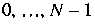
, whereMultiports are typically used by actors that communicate via an indeterminate number of channels. For example, a "distributor" or "demultiplexor" actor might divide an input stream into a number of output streams, where the number of output streams depends on the connections made to the actor. A stream is a sequence of tokens sent over a channel.
An IORelation, by default, represents a single channel. By calling its setWidth() method, however, it can be converted to a bus. A multiport may use a bus instead of multiple relations to distribute its data, as shown in figure
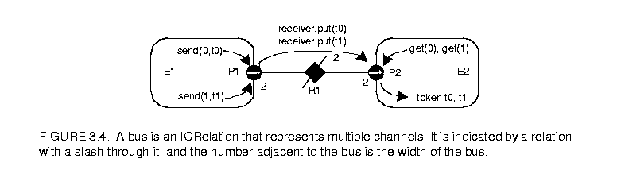
3.4. The width of a relation is the number of channels supported by the relation. If the relation is not a bus, then its width is one.The width of a port is the sum of the widths of the relations linked to it. In figure 3.4, both the sending and receiving ports are multiports with width two. This is indicated by the "2" adjacent to each port. Note that the width of a port could be zero, if there are no relations linked to a port (such a port is said to be disconnected). Thus, a port may have width zero, even though a relation cannot. By convention, in Ptolemy II, if a token is sent from such a port, the token goes nowhere. Similarly, if a token is sent via a relation that is not linked to any input ports, then the token goes nowhere. Such a relation is said to be dangling.
A given channel may reach multiple ports, as shown in figure
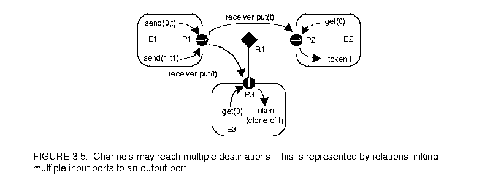
3.5. This is represented by a relation that is linked to multiple input ports. In the default implementation, in class IOPort, a reference to the token is sent to all destinations. Note that tokens are assumed to be immutable, so the recipients cannot modify the value. This is important because in most domains, it is not obvious in what order the recipients will see the token.IOPort provides a broadcast() method for convenience. This method sends a specified token to all receivers linked to the port, regardless of the width of the port.
An elaborate example showing all of the above features is shown in figure
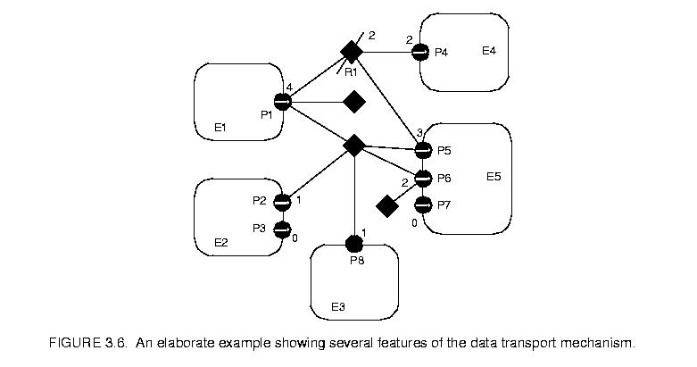
3.6. In that example, we assume that links are constructed in top-to-bottom order. The arrows in the ports indicate the direction of the flow of tokens, and thus specify whether the port is an input, an output, or both. Multiports are indicated by adjacent numbers larger than one.The top relation is a bus with width two, and the rest are not busses. The width of port P1 is four. Its first two outputs (channels zero and one) go to P4 and to the first two inputs of P5. The third output of P1 goes nowhere. The fourth becomes the third input of P5, the first input of P6, and the only input of P8, which is both an input and an output port. Ports P2 and P8 send their outputs to the same set of destinations, except that P8 does not send to itself. Port P3 has width zero, so its send() method cannot be called without triggering an exception. Port P6 has width two, but its second input channel has no output ports connected to it, so calling get(1) will trigger an exception that indicates that there is no data. Port P7 has width zero so calling get() with any argument will trigger an exception.
Recall that a port is transparent if its container is transparent (isOpaque() returns false). A CompositeActor is transparent unless it has a local director. Figure
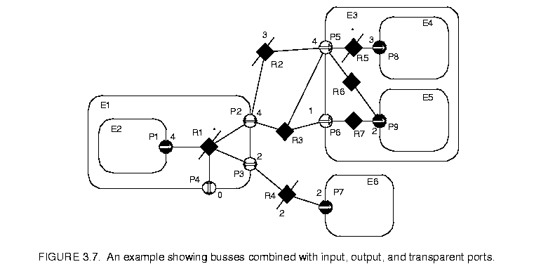
3.7 shows an elaborate example where busses, input, and output ports are combined with transparent ports. The transparent ports are filled in white, and again arrows indicate the direction of token flow. The TclBlend code to construct this example is shown in figure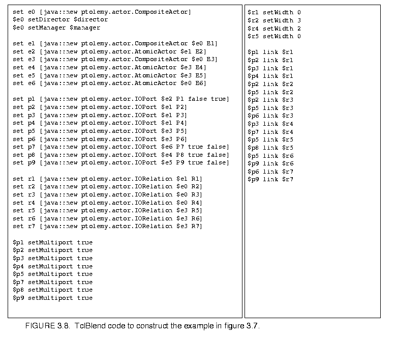
3.8.By definition, a transparent port is an input if either
That is, a transparent port is an input port if it can accept data (which it may then just pass through to a transparent output port). Correspondingly, a transparent port is an output port if either
Thus, assuming P1 is an output port and P7, P8, and P9 are input ports, then P2, P3, and P4 are both input and output ports, while P5 and P6 are input ports only.
Two of the relations that are inside composite entities (R1 and R5) are labeled as busses with a star (*) instead of a number. These are busses with unspecified width. The width is inferred from the topology. This is done by checking the ports that this relation is linked to from the inside and setting the width to the maximum of those port widths, minus the widths of other relations linked to those ports on the inside. Each such port is allowed to have at most one inside relation with an unspecified width, or an exception is thrown. If this inference yields a width of zero, then the width is defined to be one. Thus, R1 will have width 4 and R5 will have width 3 in this example. The width of a transparent port is the sum of the widths of the relations it is linked to on the outside (just like an ordinary port). Thus, P4 has width 0, P3 has width 2, and P2 has width 4. Recall that a port can have width 0, but a relation cannot have width less than one.
When data is sent from P1, four distinct channels can be used. All four will go through P2 and P5, the first three will reach P8, two copies of the fourth will reach P9, the first two will go through P3 to P7, and none will go through P4.
By default, an IORelation is not a bus, so its width is one. To turn it into a bus with unspecified width, call setWidth() with a zero argument. Note that getWidth() will nonetheless never return zero (it returns at least one). To find out whether setWidth() has been called with a zero argument, call isWidthFixed() (see figure 3.2). If a bus with unspecified width is not linked on the inside to any transparent ports, then its width is one. It is not allowed for a transparent port to have more than one bus with unspecified width linked on the inside (an exception will be thrown on any attempt to construct such a topology). Note further that a bus with unspecified width is still a bus, and so can only be linked to multiports.
In general, bus widths inside and outside a transparent port need not agree. For example, if
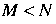
in figure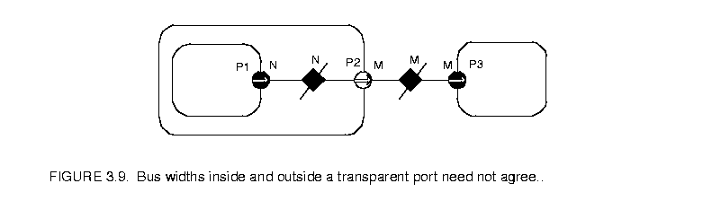
3.9, then first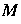
channels from P1 reach P3, and the last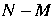
channels are dangling. If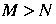
, then all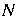
channels from P1 reach P3, but the last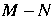
channels at P3 are dangling. Attempting to get a token from these channels will trigger an exception. Sending a token to these channels just results in loss of the token.Note that data is not actually transported through the relations or transparent ports in Ptolemy II. Instead, each output port caches a list of the destination receivers (in the form of the two-dimensional array returned by getRemoteReceivers()), and sends data directly to them. The cache is invalidated whenever the topology changes, and only at that point will the topology be traversed again. This significantly improves the efficiency of data transport.
The receiver used by an input port determines the communication protocol. This is closely bound to the model of computation. The IOPort class creates a new receiver when necessary by calling its _newReceiver() protected method. That method delegates to the director returned by getDirector(), calling its newReceiver() method (the Director class will be discussed in section 3.3 below). Thus, the director controls the communication protocol, in addition to its primary function of determining the flow of control. Here we discuss the receivers that are made available in the actor package. This should not be viewed as an exhaustive set, but rather as a particularly useful set of receivers. These receivers are shown in figure 3.2.
The Director base class by default returns a simple receiver called a Mailbox. A mailbox is a receiver has capacity for a single token. It will throw an exception if it is empty and get() is called, or it is full and put() is called. Thus, a subclass of Director that uses this should schedule the calls to put() and get() so that these exceptions do not occur, or it should catch these exceptions.
This is supported by the QueueReceiver class. A QueueReceiver contains an instance of FIFOQueue, from the actor.util package, which implements a first-in, first-out queue. This is appropriate for all flavors of dataflow as well as Kahn process networks.
In the Kahn process networks model of computation [20], which is a generalization of dataflow [22], each actor has its own thread of execution. The thread calling get() will stall if the corresponding queue is empty. If the size of the queue is bounded, then the thread calling put() may stall if the queue is full. This mechanism supports implementation of a strategy that ensures bounded queues whenever possible [32].
In the process networks model of computation, the history of tokens that traverse any connection is determinate under certain simple conditions. With certain technical restrictions on the functionality of the actors (they must implement monotonic functions under prefix ordering of sequences), our implementation ensures determinacy in that the history does not depend on the order in which the actors carry out their computation. Thus, the history does not depend on the policies used by the thread scheduler.
FIFOQueue is a support class that implements a first-in, first-out queue. It is part of the actor.util package, shown in figure
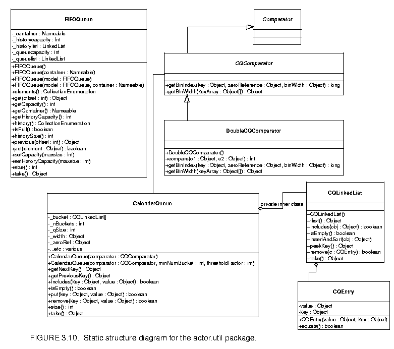
3.10. This class has two specialized features that make it particularly useful in this context. First, its capacity can be constrained or unconstrained. Second, it can record a finite or infinite history, the sequence of objects previously removed from the queue. The history mechanism is useful both to support tracing and debugging and to provide access to a finite buffer of previously consumed tokens.An example of an actor definition is shown in figure
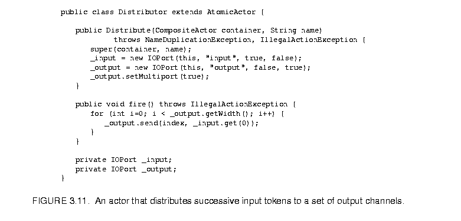
3.11. This actor has a multiport output. It reads successive input tokens from the input port and distributes them to the output channels. This actor is written in a domain-polymorphic way, and can operate in any of a number of domains. If it is used in the PN domain, then its input will have a QueueReceiver and the output will be connected to ports with instances QueueReceiver.Rendezvous, or synchronous communication, requires that the originator of a token and the recipient of a token both be simultaneously ready for the data transfer. As with process networks, the originator and the recipient are separate threads. The originating thread indicates a willingness to rendezvous by calling send(), which in turn calls the put() method of the appropriate receiver. The recipient indicates a willingness to rendezvous by calling get() on an input port, which in turn calls get() of the designated receiver. Whichever thread does this first must stall until the other thread is ready to complete the rendezvous.
This style of communication is implemented in the CSP domain. In the receiver in that domain, the put() method suspends the calling thread if the get() method has not been called. The get() method suspends the calling thread if the put() method has not been called. When the second of these two methods is called, it wakes up the suspended thread and completes the data transfer. The actor shown in figure 3.11 works unchanged in the CSP domain, although its behavior is different in that input and output actions involve rendezvous with another thread.
Nondeterministic transfers can be easily implemented using this mechanism. Suppose for example that a recipient is willing to rendezvous with any of several originating threads. It could spawn a thread for each. These threads should each call get(), which will suspend the thread until the originator is willing to rendezvous. When one of the originating threads is willing to rendezvous with it, it will call put(). The multiple recipient threads will all be awakened, but only of them will detect that its rendezvous has been enabled. That one will complete the rendezvous, and others will die. Thus, the first originating thread to indicate willingness to rendezvous will be the one that will transfer data. Guarded communication [3] can also be implemented.
In the discrete-event model of computation, tokens that are transferred between actors have a time stamp, which specifies the order in which tokens should be processed by the recipients. The order is chronological, by increasing time stamp. To implement this, a discrete-event system will normally use a single, global, sorted queue rather than an instance of FIFOQueue in each input port. The kernel.util package, shown in figure 3.10, provides the CalendarQueue class, which gives an efficient and flexible implementation of such a sorted queue.
This data transfer mechanism has a number of interesting features. First, note that the actual transfer of data does not involve relations, so a model of computation could be defined that did not rely on relations. For example, a global name server might be used to address recipient ports. For example, to construct simulations of highly dynamic networks, such as wireless communication systems, it may be more intuitive to model a system as a aggregation of unconnected actors with addresses. A name server would return a reference to a port given an address. This could be accomplished simply by overriding the getRemoteReceivers() method of IOPort, or by providing an alternative method for getting references to receivers. The subclass of IOPort would also have to ensure the creation of the appropriate number of receivers. The base class relies on the width of the port to determine how many receivers to create, and the width is zero if there are no relations linked.
Note further that the mechanism here supports bidirectional ports. An IOPort may return true to both the isInput() and isOutput() methods.
The Executable interface, shown in figure 3.12, is implemented by the Director class, and is extended by the Actor interface. An actor is an executable entity. There are two types of actors, AtomicActor, which extends ComponentEntity, and CompositeActor, which extends CompositeEntity. As the names imply, an AtomicActor is a single entity, while a CompositeActor is an aggregation of actors.
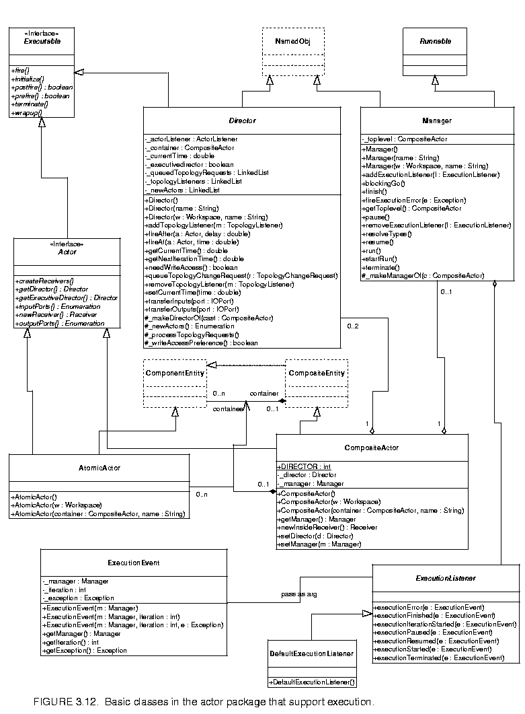
defines how an object can be invoked. There are six methods. The initialize() method is assumed to be invoked exactly once during the lifetime of an execution of a model. It may be invoked again to restart an execution. The prefire(), fire(), and postfire() methods will usually be invoked many times. The fire() method may be invoked several times between invocations of prefire() and postfire(). The wrapup() method will be invoked exactly once per execution, at the end of the execution.The terminate() method is provided as a last-resort mechanism to interrupt execution based on an external event. It is not called during the normal flow of execution. It should be used only to stop runaway threads that do not respond to more usual mechanism for stopping an execution.
An iteration is defined to be one invocation of prefire(), any number of invocation of fire(), and one invocation of postfire(). An execution is defined to be one invocation of initialize(), followed by any number of iterations, followed by one invocation of wrapup(). The methods initialize(), prefire(), fire(), postfire(), and wrapup() are called the action methods. While, the action methods in the executable interface are executed in order during the normal flow of an iteration, the terminate() method can be executed at any time, even during the execution of the other methods.
The initialize() method of each actor gets invoked exactly once, much like the begin() method in Ptolemy 0.x. Typical actions of the initialize() method include creating and initializing private data members. In domains that use typed ports and/or schedulers, type resolution and scheduling has not been performed when initialize() is invoked. Thus, the initialize() method may define the types of the ports and may set parameters that affect scheduling.
The prefire() method may be invoked multiple times during an execution, but only once per iteration. The prefire() returns true to indicate that the actor is ready to fire. In opaque composite actors, the prefire() method is responsible for transferring data from the opaque ports of the composite actor to the ports of the contained actors. See section 3.3.5 below.
The fire() method may be invoked multiple times during an iteration. In most domains, this method defines the computation performed by the actor.
The postfire() method will be invoked exactly once during an iteration, after all invocations of the fire() method in that iteration. An actor may return false in postfire to indicate that the actor should not be fired again. It has concluded its mission.
The wrapup() method is invoked exactly once during the execution of a model, unless an exception prevents its invocation. Typically, wrapup() is responsible for cleaning up after execution has completed, and perhaps flushing output buffers before execution ends.
The terminate() method may be called at any time during an execution, but is not necessarily called at all. When terminate() is called, no more execution is important, and the actor should do everything in its power to stop execution right away. This method should be used as a last resort if all other mechanisms for stopping an execution fail.
A director governs the execution of a composite entity. A manager governs the overall execution of a model. An example of the use of these classes is shown in figure
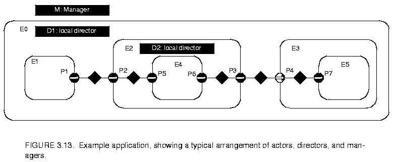
3.13. In that example, a top-level entity, E0, has an instance of Director, D1, that serves the role of its local director. A local director is responsible for execution of the components within the composite. It will perform any scheduling that might be necessary, dispatch threads that need to be started, generate code that needs to be generated, etc. In the example, D1 also serves as an executive director for E2. The executive director associated with an actor is the director that is responsible for firing the actor.A composite actor that is not at the top level may or may not have its own local director. If it has a local director, then it defined to be opaque (isOpaque() returns true). In figure 3.13, E2 has a local director and E3 does not. The contents of E3 are directly under the control of D1, as if the hierarchy were flattened. By contrast, the contents of E2 are under the control of D2, which in turn is under the control of D1. In the terminology of the previous generation, Ptolemy 0.x, E2 was called a wormhole. In Ptolemy II, we simply call it a composite opaque actor. It will be explained in more detail below in section 3.3.5.
We define the director (vs. local director or executive director) of an actor to be either its local director (if it has one) or its executive director (if it does not). A composite actor that is not at the top level has as its executive director the director of the container. Every executable actor has a director except the top-level composite actor, and that director is what is returned by the getDirector() method of the Actor interface (see figure 3.12).
When any action method is called on an opaque composite actor, the composite actor will generally call the corresponding method in its local director. This interaction is crucial, since it is domain-independent and allows for communication between different models of computation. When fire() is called in the director, the director is free to invoke iterations in the contained topology until the stopping condition for the model of computation is reached.
The postfire() method of a director returns false to stop its execution normally. It is the responsibility of the next director up in the hierarchy (or the manager if the director is at the top level) to conclude the execution of this director by calling its wrapup() method.
The Director class provides a default implementation of an execution, although specific domains may override this implementation. In order to ensure interoperability of domains, they should stick fairly closely to the sequence.
Two common sequences of method calls between actors and directors are shown in figure
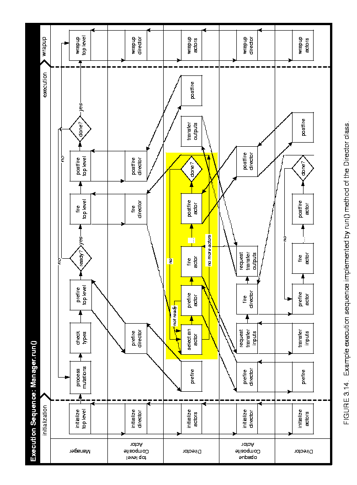
3.14 and 3.15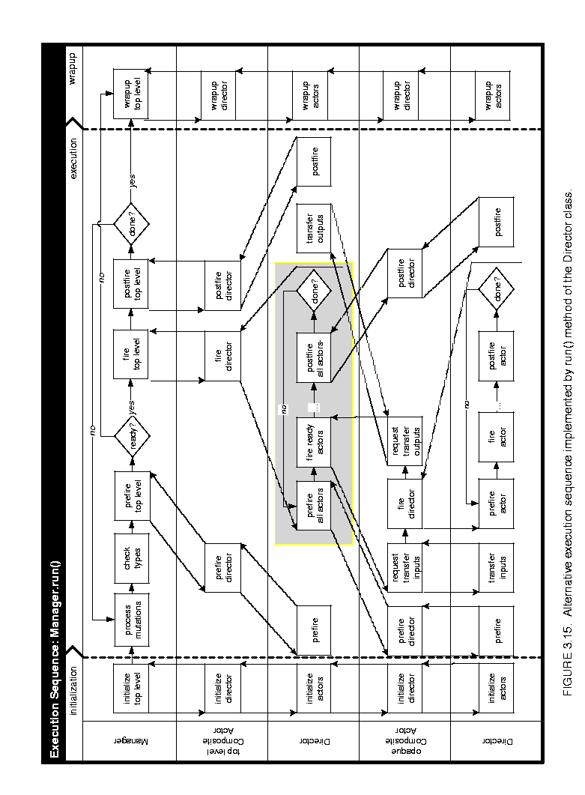
. These differ in the shaded areas, which define the domain-specific sequencing of actor firings. In figure 3.14, the fire() method of the director selects an actor, invokes its prefire() method, and if that returns true, invokes its fire() method some number of times (domain dependent) followed by its postfire() method. In figure 3.15, the fire() method of the director invokes the prefire() method of all the actors before invoking any of their fire() methods.When a director is initialized, via its initialize() method, it invokes initialize() on all the actors in the next level of the hierarchy, in the order in which these actors were created. The wrapup() method works in a similar way, deeply traversing the hierarchy. In other words, calling initialize() on a composite actor is guaranteed to initialize in all the objects contained within that actor. Similarly for wrapup().
The methods prefire() and postfire(), on the other hand, are not deeply traversing functions. Calling prefire() on a director does not imply that the director call prefire() on all its actors. Some directors may need to call prefire() on some or all contained actors before being able to return, but some directors may not need to call prefire() on any contained objects at all. A director may even implement short-circuit evaluation, where it calls prefire() on only enough of the contained actors to determine its own return value. Postfire() works similarly, except that it may only be called after at least one successful call to fire().
The fire() method is where the bulk of work for a director occurs. When a director is fired, it has complete control over execution, and may initiate whatever iterations of other actors are appropriate for the model of computation that it implements. It is important to stress that once a director is fired, outside objects do not have control over when the iteration will complete. The director may not iterate any contained actors at all, or it may iterate the contained actors forever, and not stop until terminate() is called. Of course, in order to promote interoperability, directors should define a finite execution that they perform in the fire() method.
In some domains, the firing of a director corresponds exactly to the sequential firing of the contained actors in a specific predetermined order. This ordering is known as a static schedule for the actors. Work is under way to provide classes that support this style of execution. There is also a family of domains where actors are associated with threads. Work is under way to provide classes to support this as well.
While a director implements a model of computation, a manager controls the overall execution of a model. The manager interacts with a single composite actor, known as a top level composite actor. The Manager class is shown in figure 3.12. Execution can be initiated in a manager by either of two methods, run() and startRun(). The startRun() method spawns a thread that calls run(), and then immediately returns. After initializing the hierarchy by calling initialize() in the top-level composite actor, the manager will run multiple iterations within the top-level composite. This continues until postfire() in the top-level composite actor returns false, or either terminate() or finish() is called in the manager. The terminate() method corresponds to an immediate halt of execution, and should be used only if other more graceful methods for ending an execution fail. The finish() method allows the system to continue until the end of the current iteration in the top-level composite actor, and then invokes wrapup().
Execution may also be paused between top-level iterations by calling the pause() method. After each top-level iteration, the manager checks to see if pause() has been called. If so, then the manager will not start the next top-level iteration until after resume() is called. In certain domains, such as the process networks domain, there is not a very well defined concept of an iteration. Generally these domains do not rely on repeated iteration firings by the manager, and pause() and resume() will have no effect.
The ExecutionListener interface and the ExecutionEvent class provide a mechanism for a Manager to report events of interest to a user interface. Generally a user interface will use the events to notify the user of the progress of execution of a system. A user interface can register one or more ExecutionListeners with a Manager using the method addExecutionListener() in the Manager class. When an event occurs, the appropriate method will get called in all the registered ExecutionListeners with an ExecutionEvent that describes the context of the event.
Several kinds of events are defined in the ExecutionListener interface. A listener is notified of these events by calling the appropriate method. The executionStarted() method indicates that execution has successfully begun and the system is about to be initialized. Likewise, executionFinished() indicates that execution has completed without error and all the actors in this system have completed execution of wrapup(). The executionTerminated() method indicates that the user requested that execution cease immediately, through the terminate() method, and the system has done whatever possible to return itself to a consistent state. The executionPaused() and executionResumed() methods are called when execution successfully pauses and resumes.
Note that in general, while these notification methods roughly correspond to methods in the Manager class, calling the methods in a manager does not imply that the events will occur immediately. The events are only issued to the listeners after the associated action is actually performed. An example of this is that calling the pause() method multiple times in a Manager without interleaving calls to resume() will result in a maximum of one executionPaused() call in the listeners.
Prior to each top-level iteration, the executionIterationStarted() method is called. This is intended to provide end users with confidence that execution is under way.
The executionError() method is called when the Manager catches an exception that was thrown during execution. All such exceptions are caught in the Manager, and if any execution listeners are currently registered with the Manager, then an ExecutionEvent will be created with the Exception encapsulated. If no execution listeners are registered then the stack trace will be printed to the standard output. In any domain that begins independent threads of execution, exceptions created during execution will be passed up to the run() method of each thread. In order to view these exceptions through the executionError() call to listeners, the independent threads should catch all exceptions and pass them along to the Manger using the fireExecutionError() method in the Manager class.
A default implementation of the ExecutionListener interface is provided in the DefaultExecutionListener class. This class reports all events on the standard output.
A mutation is a run-time modification of a model. In most domains, it is not safe for mutations to occur at arbitrary times during an execution. For example, a schedule may need to be re-calculated to take into account the mutation. Type resolution may need to be re-done. Or a domain may wish to have tight control over when parameters of an application change.
The Director class leverages the event subpackage of the kernel, which provides support for requesting and tracking changes in the topology. This support is documented in the kernel chapter. The general strategy in Director is simple. Any code that wishes to perform a mutation queues that mutation with the director rather than performing it directly (using the queueTopologyChangeRequest() method, shown in figure 3.12). When it is safe, that mutation is performed, and all mutation listeners that have been registered with the director (using the addTopologyListener() method) are informed of the mutation. In subclasses of Directory, the mutations are typically performed in the prefire() method.
The _newActors() method of Director returns an enumeration of actors that are created in a batch of mutations. This list is used to initialize these actors. It is possible that initialization of the new actors will result in further mutations (for example, if they are higher-order functions). Thus, the prefire() method of subclasses of Director needs to iteratively initialize new actors until there are no more pending mutations.
One of the key features of Ptolemy II is its ability to hierarchically mix models of computation in a disciplined way. The way that it does this is to have actors that are composite (non-atomic) and opaque. Such an actor was called a wormhole in the earlier generation of Ptolemy. Its ports are opaque and its contents are not visible via methods like deepGetEntities().
Recall that an instance of CompositeActor that is at the top level of the hierarchy must have a local director in order to be executable. A CompositeActor at a lower level of the hierarchy may also have a local director, in which case, it is opaque (isOpaque() return true). It also has an executive director, which is simply the director of its container. For a composite opaque actor, the local director and executive director need not follow the same model of computation. Hence hierarchical heterogeneity.
The ports of a composite opaque actor are opaque, but it is a composite (it can contain actors and relations). This has a number of implications on execution. Consider the simple example shown in figure
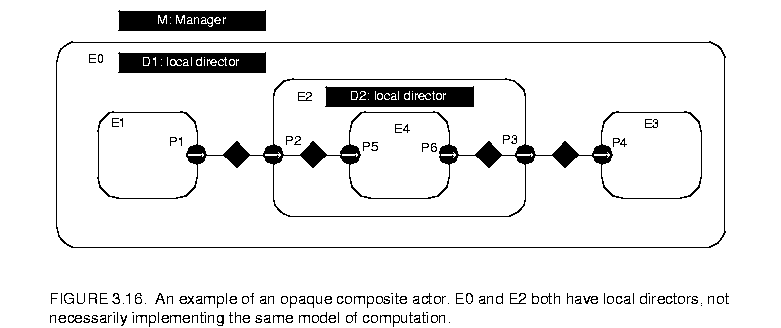
3.16. Assume that both E0 and E2 have local directors (D1 and D2), so E2 is opaque. The ports of E2 therefore are opaque, as indicated in the figure by their solid fill. Since its ports are opaque, when a token is sent from the output port P1, it is deposited in P2, not P5.In the execution sequences of figures 3.14 and 3.15, E2 is treated as an atomic actor by D1; i.e. D1 acts as an executive director to E2. Thus, the fire() method of D1 invokes the prefire(), fire(), and postfire() methods of E1, E2, and E3. The fire() method of E2 is responsible for transferring the token from P2 to P5. It does this by delegating to its local director, invoking its transferInputs() method. It then invokes the fire() method of D2, which in turn invokes the prefire(), fire(), and postfire() methods of E4.
During its fire() method, E2 will invoke the fire() method of D2, which typically will fire the actor E4, which may send a token via P6. Again, since the ports of E2 are opaque, that token goes only as far as P3. The fire() method of E2 is then responsible for transferring that token to P4. It does this by delegating to its executive director, invoking its transferOutputs() method.
The CompositeActor class delegates transfer of its inputs to its local director, and transfer of its outputs to its executive director. This is the correct organization, because in each case, the director appropriate to the model of computation of the destination port is the one handling the transfer. It can therefore handle it in a manner appropriate to the receiver in that port.
Note that the port P3 is an output, but it has to be capable of receiving data from the inside, as well as sending data to the outside. Thus, despite being an output, it contains a receiver. Such a receiver is called an inside receiver. The methods of IOPort offer only limited access to the inside receivers (only via the getInsideReceivers() method and getReceivers(relation), where relation is an inside linked relation).
In general, a port may be both an input and an output. An opaque port of a composite opaque actor, thus, must be capable of storing two distinct types of receivers, a set appropriate to the inside model of computation, obtained from the local director, and a set appropriate to the outside model of computation, obtained from its executive director. Most methods that access receivers, such as hasToken() or hasRoom(), refer only to the outside receivers. The use of the inside receivers is rather specialized, only for handling composite opaque actors, so a more basic interface is sufficient.